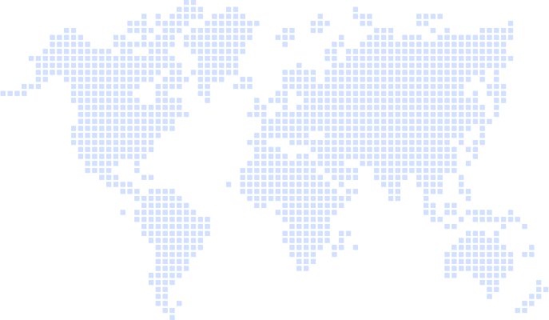

Heading & intro copy options
Copy only — swap into any of the layouts below. Option 1 is what's live on jiki-landing.html today.
1 · Current
What do our students think?
Thousands of people have learnt to code with us. Here's what a few of them had to say.
Safe and clear. Reads as a label rather than a reason to keep reading — the scale ("thousands") is doing all the persuading.
2 · Hand the mic over
Don't take our word for it
Thousands of people have learnt to code with us. Here's what a few of them had to say.
Acknowledges that everything above this point is us selling. Works with every layout, and especially well straight after a claim-heavy section.
3 · Speaks to the doubt
Not sure you're the coding type?
Neither were they. Thousands of people have learnt to code with us — here's what a few of them had to say.
The strongest option if the quotes we lead with are the "no previous experience" ones. Pairs best with layouts that show skill-level badges (ideas 5–8).
4 · Leads with the number
Thousands of beginners later…
We've taught people to code in 40+ countries. Here's what a few of them had to say.
Puts the proof in the heading. Needs a real country or student number we're happy to publish. Good with the map and marquee layouts.
5 · Quiet and short
In their words
Thousands of people have learnt to code with us. These are a few of them.
Gets out of the way fast, which suits the busiest layouts — the sticker wall, sticky notes and scrolling rows already carry plenty of energy.
6 · Emotional payoff
The moment it clicks
Thousands of people have found it with us. Here's how a few of them describe it.
Frames the quotes as one shared feeling rather than separate reviews. Best with the spotlight carousel, where one quote gets full attention.
7 · Playful
Real people. Real code. Really proud.
Thousands of people have learnt to code with us. Here's what a few of them had to say.
Matches the confetti, sticker and polaroid treatments. Would feel over-cheerful above the refined or dark quote cards.
8 · Direct address
Ask the people who got here first
Thousands of people have learnt to code with us. Here's what a few of them had to say.
Positions the reader as next in line rather than as an outsider looking at reviews. Sits comfortably above any layout.
6. World map pins
Student photos sit as pins on a dotted world map, gently bobbing; hover a pin to reveal their status badge and quote
What do our students think?
Loved by students in 40+ countries. Hover a photo to read their story.


Fred · 🇬🇧 Manchester, UK
"As someone with no previous coding experience — I've been blown away with the quality of this course. I've come so far in the past weeks."
Total Beginner

Shaun · 🇳🇬 Lagos, Nigeria
"I was brand new to coding and this course exceeded my wildest expectations and then some. It will be one of the best choices you will ever make!"
Absolute Beginner

Lucas · 🇯🇵 Tokyo, Japan
"From the moment I bought the course, I realized it would be different from anything I had ever experienced. Learning while actually coding has made it pretty fun."
Total Beginner

Nolan · 🇺🇸 Austin, USA
"Getting into programming always felt overwhelming. I often quit before I really got started. The course has provided an excellent, guided path to self-sufficiency."
Beginner

RedRobio · 🇦🇺 Sydney, Australia
"This course has pushed me past what I thought were personal limitations, and in doing so, has increased my confidence and motivation."
Junior Developer

Matt · 🇧🇷 São Paulo, Brazil
"I'd been struggling with self-paced learning, so I signed up for the structure and accountability. The teaching style — full of effective analogies — really clicked with me."
Python Dev
8. Flip cards
Front shows photo, name and rating; hovering flips the card 180° to reveal a flag, location, and skill-level badge
What do our students think?
Hover a card to see where they're from and where they started.
 Maya K.
Maya K.
★★★★★
Hover to reveal
🇬🇧
Manchester, UK
Total Beginner
"Loops finally clicked, and now I actually enjoy debugging."
 James T.
James T.
★★★★★
Hover to reveal
🇺🇸
Austin, USA
Intermediate Dev
"Bite-sized exercises kept me coming back every day."
 Ade O.
Ade O.
★★★★★
Hover to reveal
🇳🇬
Lagos, Nigeria
Beginner
"Finally understand recursion. Didn't think that day would come."
 Kenji M.
Kenji M.
★★★★★
Hover to reveal
🇯🇵
Tokyo, Japan
Intermediate Dev
"Learned more in a month than a semester of school."
 Lucy F.
Lucy F.
★★★★★
Hover to reveal
🇧🇷
São Paulo, Brazil
Total Beginner
"The only platform where I actually finished a course."
 Sara P.
Sara P.
★★★★★
Hover to reveal
🇦🇺
Sydney, Australia
Beginner
"Instant feedback made every mistake a lesson, not a dead end."
 Hana C.
Hana C.
★★★★★
Hover to reveal
🇰🇷
Seoul, South Korea
Total Beginner
"My 12 year old is now teaching me things I learned on Jiki."
 Dan W.
Dan W.
★★★★★
Hover to reveal
🇨🇦
Toronto, Canada
Intermediate Dev
"The certificate felt earned, not handed out."
12. Sticky note wall — 3-wide, real testimonials
Same pinned sticky-note treatment as idea 10, but a wider 3-column grid using the real names, quotes, statuses, and photos from the 21 testimonials on jiki-landing.html, on a white dotted background with purple/blue note colors from the Tailwind palette
What do our students think?
Real feedback from real students, pinned straight to the wall.
"Seeing how much effort, thought, and even love is put into this course, it's such a pleasure to be a student here. Every explanation, each exercise turn this course into a masterpiece."
"As someone with no previous coding experience — I've been blown away with the quality of this course. I've come so far in the past weeks."
"I was brand new to coding and this course exceeded my wildest expectations and then some. It will be one of the best choices you will ever make!"
"From the moment I bought the course, I realized it would be different from anything I had ever experienced. Learning while actually coding has made it pretty fun."
"Getting into programming always felt overwhelming. I often quit before I really got started. The course has provided an excellent, guided path to self-sufficiency."
"This course has pushed me past what I thought were personal limitations, and in doing so, has increased my confidence and motivation."
13. Color-block confetti cards
Bold, saturated gradient cards with an oversized quote mark watermark, a slight alternating tilt that straightens on hover, and real names/quotes/photos from jiki-landing.html
What do our students think?
Real feedback from real students — loud and proud.
Seeing how much effort, thought, and even love is put into this course, it's such a pleasure to be a student here. Every explanation, each exercise turn this course into a masterpiece.
As someone with no previous coding experience — I've been blown away with the quality of this course. I've come so far in the past weeks.
I was brand new to coding and this course exceeded my wildest expectations and then some. It will be one of the best choices you will ever make!
This course has pushed me past what I thought were personal limitations, and in doing so, has increased my confidence and motivation.
From the moment I bought the course, I realized it would be different from anything I had ever experienced. Learning while actually coding has made it pretty fun.
Getting into programming always felt overwhelming. I often quit before I really got started. The course has provided an excellent, guided path to self-sufficiency.
17. Neo-brutalist cards, 2-up
Same neo-brutalist treatment as idea 15, but 2 cards per row instead of 3 — wider cards, more breathing room per quote
What do our students think?
Real feedback from real students, no gradients required.
Coding Newbie
"Seeing how much effort, thought, and even love is put into this course, it's such a pleasure to be a student here. Every explanation, each exercise turn this course into a masterpiece."
Total Beginner
"As someone with no previous coding experience — I've been blown away with the quality of this course. I've come so far in the past weeks."
Absolute Beginner
"I was brand new to coding and this course exceeded my wildest expectations and then some. It will be one of the best choices you will ever make!"
Total Beginner
"From the moment I bought the course, I realized it would be different from anything I had ever experienced. Learning while actually coding has made it pretty fun."
Beginner
"Getting into programming always felt overwhelming. I often quit before I really got started. The course has provided an excellent, guided path to self-sufficiency."
Junior Developer
"This course has pushed me past what I thought were personal limitations, and in doing so, has increased my confidence and motivation."
Python Dev
"I'd been struggling with self-paced learning, so I signed up for the structure and accountability. The teaching style — full of effective analogies — really clicked with me."
Beginner
"The course provided me an opportunity to learn from a bonafide master. Thank you for making it accessible."
Was in Tutorial Hell
"This course does the best job in teaching you the fundamentals, and made it fun!"
Beginner
"How I think about thinking, and about problem solving in general, has changed dramatically."
Intermediate Dev
"I joined this course with some coding experience, but the clarity and structure made everything click like never before, building concepts step-by-step."
Beginner
"I had no expectations when I stumbled upon Jiki, but it turned out to be my greatest discovery of the year! I had no experience whatsoever — 100% recommended!"
Junior Developer
"It instills some basic tenets of the coder's mindset that will be invaluable on your journey."
Beginner
"I have next to no coding experience yet have found this course to be so intelligently scaffolded, with concepts clearly explained and logically built one after the other."
Intermediate Dev
"This course gives you the tools to think through the process before even writing a single line of code, which makes the actual coding part easier."
Total Beginner
"I've learned an unbelievable amount in a few short weeks — solving problems I would never have thought possible!"
Junior Developer
"Jeremy and the mentors have created an amazing resource like no other. From the fun and sleek interface to the live classes and labs, it all comes together to make a superb learning experience."
Beginner
"Enrolling in this programming course was one of the best decisions I've ever made. The curriculum is well-structured, and the team is supportive and truly invested in helping students succeed."
Beginner
"You will not believe how fantastic this course is! You learn to write code by writing code to solve problems that match — and push — your abilities. Jeremy is a master teacher."
Serial Beginner
"For nearly a decade, I've repeatedly started online coding courses but always got stuck. Now, after years of trying, suddenly, coding feels possible."
20. Glass duo cards
Frosted-glass cards (backdrop-filter blur, translucent white fill) floating on a purple-to-blue gradient panel, 2 per row with room for full-length quotes — real names, quotes, statuses, and photos from jiki-landing.html
What do our students think?
Real feedback from real students, told in full.
"Seeing how much effort, thought, and even love is put into this course, it's such a pleasure to be a student here. Every explanation, each exercise turn this course into a masterpiece. I really enjoy it."
"As someone with no previous coding experience — I've been blown away with the quality of this course. I've come so far in the past weeks and reflecting on what I've achieved and how much I've learned has been phenomenal."
"I was brand new to coding and this course exceeded my wildest expectations and then some. In my humble opinion, it will be one of the best choices you will ever make!"
"From the moment I bought the course, I realized it would be different from anything I had ever experienced. Learning while actually coding has made it pretty fun. It's such a pleasure to be part of it!"
"Getting into programming always felt overwhelming. I often quit before I really got started. However, the course has provided an excellent, guided path to self-sufficiency."
"This course has pushed me past what I thought were personal limitations, and in doing so, has increased my confidence and motivation. Know that when you get the certificate, it will be because you EARNED it!"
21. Ribbon-tab duo cards
White cards with a thick colored left-edge tab and a folded status ribbon in the top corner, 2 per row — real names, quotes, statuses, and photos from jiki-landing.html
What do our students think?
Real feedback from real students, tabbed and filed.
Coding Newbie
"Seeing how much effort, thought, and even love is put into this course, it's such a pleasure to be a student here. Every explanation, each exercise turn this course into a masterpiece."
Total Beginner
"As someone with no previous coding experience — I've been blown away with the quality of this course. My journey has been from a complete coding novice to someone confident tackling complex logic problems!"
Absolute Beginner
"I was brand new to coding and this course exceeded my wildest expectations and then some. It will be one of the best choices you will ever make!"
Junior Developer
"This course has pushed me past what I thought were personal limitations, and in doing so, has increased my confidence and motivation."
Total Beginner
"From the moment I bought the course, I realized it would be different from anything I had ever experienced. Learning while actually coding has made it pretty fun."
Beginner
"Getting into programming always felt overwhelming. I often quit before I really got started. The course has provided an excellent, guided path to self-sufficiency."
23. Dark neon duo cards
Near-black cards on a dark panel, each with a thin neon accent border and matching outer glow that cycles purple/blue/green/red, 2 per row — real names, quotes, statuses, and photos from jiki-landing.html
What do our students think?
Real feedback from real students, glowing in the dark.
"This course hasn't just taught basic structures and logic, but it instills some basic tenets of the coder's mindset that will be invaluable on your journey."
"I have next to no coding experience yet have found this course to be so intelligently scaffolded, with concepts clearly explained and logically built one after the other."
"This course gives you the tools to think through the process before even writing a single line of code, which makes the actual coding part easier."
"It is Jeremy's knack of breaking things down into the smallest possible steps that has really helped things click for me. I've learned an unbelievable amount in a few short weeks!"
"Jeremy and the mentors have created an amazing resource like no other. From the fun and sleek interface to the live classes and labs, it all comes together to make a superb learning experience."
"Enrolling in this programming course was one of the best decisions I've ever made. The curriculum is well-structured, and the team is supportive and truly invested in helping students succeed."
24. Torn-paper duo cards
Off-white paper cards with a jagged torn bottom edge (CSS clip-path) and a strip of washi tape at the top, 2 per row — real names, quotes, statuses, and photos from jiki-landing.html
What do our students think?
Real feedback from real students, torn straight from the notebook.
"You will not believe how fantastic this course is! You learn to write code by writing code to solve problems that match — and push — your abilities. Jeremy is a master teacher."
"For nearly a decade, I've repeatedly started online coding courses but always got stuck. Now, after years of trying, suddenly, coding feels possible."
"Seeing how much effort, thought, and even love is put into this course, it's such a pleasure to be a student here. Every explanation, each exercise turn this course into a masterpiece."
"I was brand new to coding and this course exceeded my wildest expectations and then some. It will be one of the best choices you will ever make!"